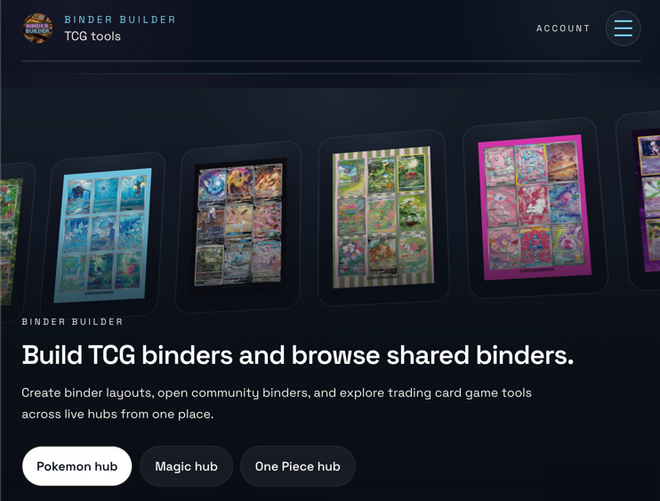
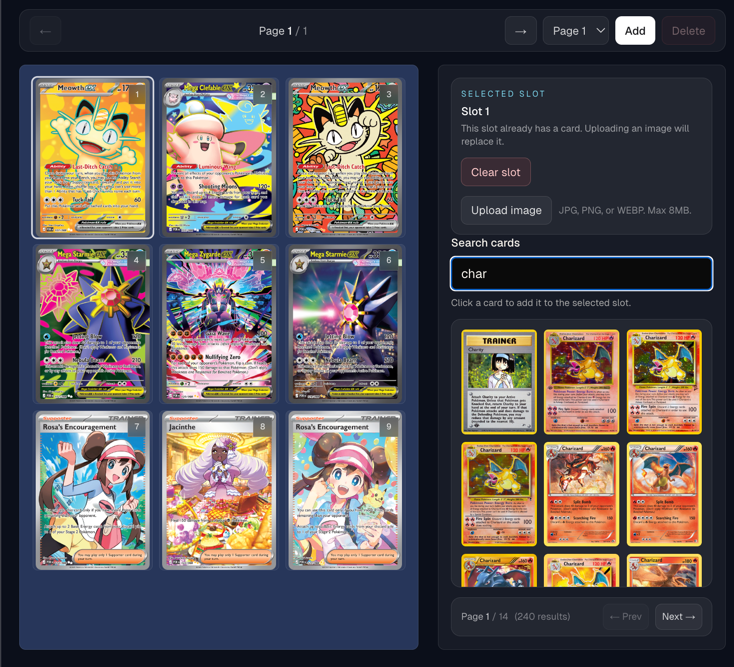
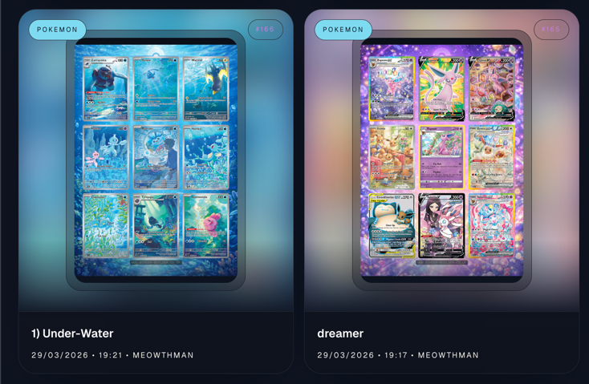
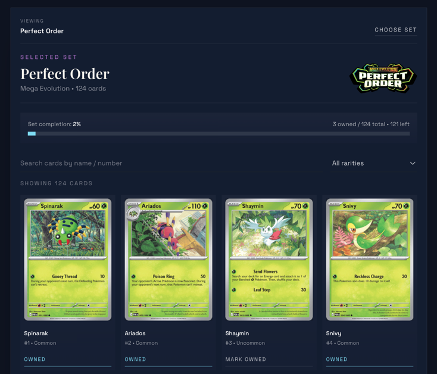

Search cards, place them into slots, and build complete pages.
The builder supports multi-page layouts and variable grid sizes, so the same tool works for clean collection pages and more curated showcase spreads.
Binder Builder is a multi-TCG workspace for building binder layouts, tracking owned cards inside set archives, and publishing polished pages for the community. Explore the live product at binder-builder.co.uk.

The live codebase is centered on visual binder building, owned-card tracking inside set archives, and public sharing across multiple TCG hubs.
The builder supports multi-page layouts and variable grid sizes, so the same tool works for clean collection pages and more curated showcase spreads.
Binder Builder is designed around presentation, which makes the finished pages feel intentional instead of just auto-filled.
That gives collectors room to build themed pages and make each binder feel like a display piece.
The account workspace turns binder building into an ongoing process instead of a one-session tool.
Shared binders have dedicated detail pages and game-specific archive pages, which gives the product a clear community layer.
Users can browse sets, search within a set, filter by rarity, and mark cards as owned to keep a live view of progress over time.
These counts were checked from the project data on April 7, 2026, rather than copied from older marketing copy.
20,202 cards in the current local dataset.
99,479 cards in the current local dataset.
3,626 cards in the current local dataset.
The existing screenshots already map well to a static landing page. These cards mirror the image highlights from the README.

Best used to show card search on one side and a near-finished binder page on the other.

Use this area to prove the public gallery and preview system are already part of the product.

This slot works well for a page that shows the product as a creative layout tool, not only a tracker.

Use this shot to anchor the tracking story with owned counts, progress, and searchable archive views.
Binder Builder already has a stronger angle than a normal card checklist. It is a visual binder tool first, but it still gives collectors real tracking value through set progress and owned-card marking.
Public sharing helps the product feel social and collectible, and the live support for Pokemon, Magic, and One Piece makes the platform feel broader than a single-game project. The main site at binder-builder.co.uk is the primary destination for the live experience.